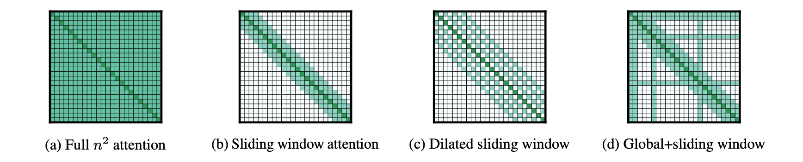
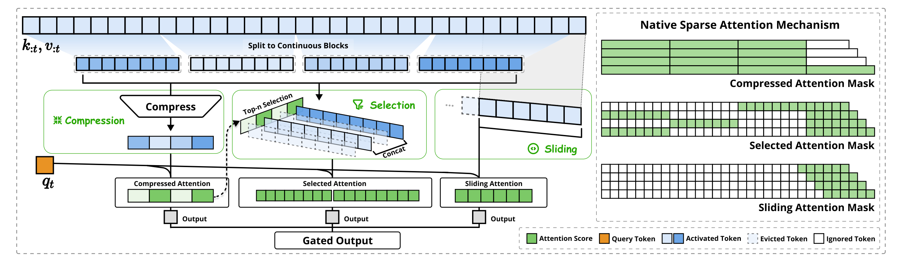
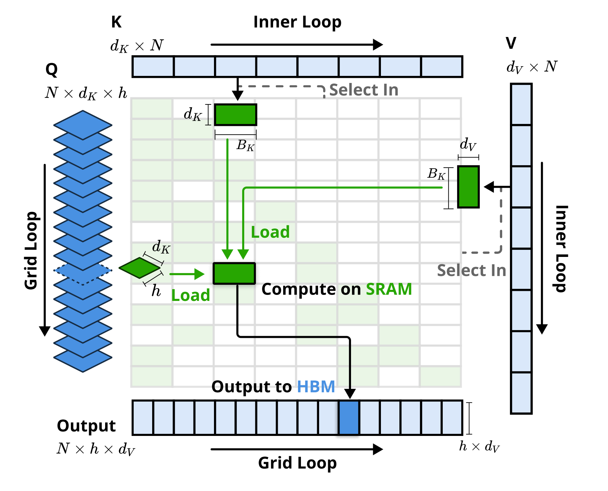
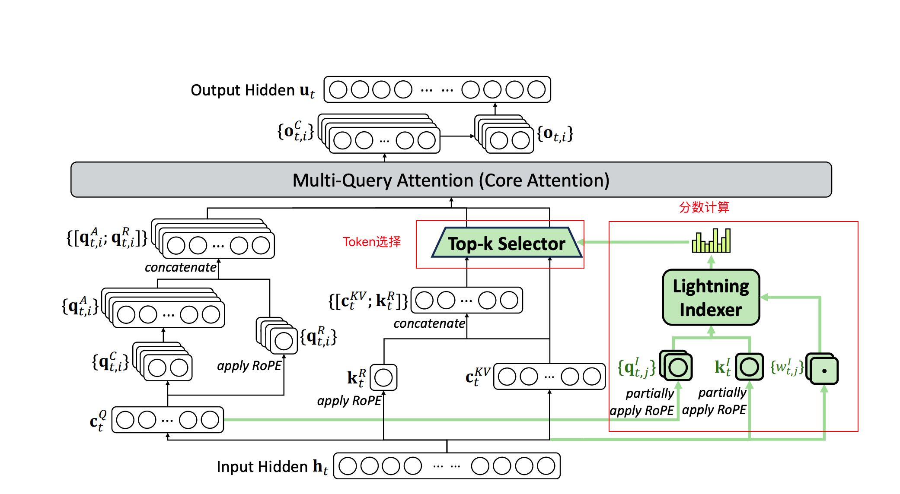

POSTS
DSA(Deepseek Sparse Attention)
By ZhongsJie
- 13 minutes read - 6158 words稀疏注意力#
复杂度瓶颈#
Transformer 架构的核心是缩放点积注意力 (Scaled Dot-Product Attention)：
$$o_i = \sum_{j=1}^{n} \alpha_{ij} \cdot v_j, \quad \alpha_{ij} = \operatorname{softmax}\left(\frac{q_i^T k_j}{\sqrt{d_k}}\right)_j$$其中 $Q, K, V \in \mathbb{R}^{n \times d}$ 分别是查询、键、值矩阵。
$QK^T$ 矩阵的形状为 $n \times n$，计算复杂度 $O(n^2 d)$，空间复杂度 $O(n^2)$。对于长序列（$n=128\text{K}$，$d=4096$，FP16），仅注意力矩阵就需要 $128\text{K} \times 128\text{K} \times 2\text{B} \approx 32\text{ GB}$ 显存——单张 GPU 无法承受。
注意力矩阵的稀疏性来源于一个直觉观察：并非所有 token 对都同等重要。大多数 token 对之间的注意力权重接近零，仅有少数 token 对承载了主要的信息交互。
这种稀疏性有两层含义：
- 自然的局部性：相邻 token 之间的依赖远强于远距离 token
- 内容相关性：语义相关的 token 即使距离远也需要交互
稀疏注意力方法试图在信息完整性和计算效率之间寻找最优平衡。

稀疏注意力方法按核心策略可分为四大类：
| 类别 | 核心思路 | 代表方法 | 复杂度 |
|---|---|---|---|
| 固定Pattern稀疏 | 预定义稀疏连接Pattern | Sparse Transformer, Longformer, BigBird, SWA | $O(n \cdot w)$ 或 $O(n\sqrt{n})$ |
| 动态/可学习稀疏 | 基于内容动态选择关注位置 | Reformer, Routing Transformer, Sinkhorn | $O(n \log n) \sim O(n \cdot k)$ |
| 低秩近似 | 将注意力矩阵分解为低秩形式 | Linformer, Nyströmformer | $O(n \cdot k)$ |
| 核方法 | 将 softmax 替换为可线性化的核函数 | Performer, Linear Transformer, CosFormer | $O(n)$ |
此外，硬件感知优化（FlashAttention 系列）虽不改变注意力计算结果，但通过 IO-aware tiling 实现了数倍的端到端加速，是所有高效注意力实现的工程基础。
固定Pattern稀疏注意力#
固定Pattern稀疏注意力（Fixed Pattern Sparse Attention）通过预定义的稀疏掩膜Pattern降低计算量。稀疏掩码 $M$ 仅依赖于 token 的位置索引，与输入内容无关。

- 这些patterns可以独立使用，也可以组合使用（比如Longformer和Big Bird）
滑动窗口注意力 (Sliding Window Attention, SWA)#
[Sliding Window Attention（滑动窗口注意力）](../Sliding Window Attention/Sliding Window Attention（滑动窗口注意力）.md)
每个 token 只关注其前后固定大小窗口 $w$ 内的 token：
$$M^{SW}_{ij} = \begin{cases} 0 & \text{if } |i - j| \leq w/2 \\ -\infty & \text{otherwise} \end{cases}$$对于因果注意力（causal），窗口为单向：
$$o_i = \sum_{j=i-w+1}^{i} \alpha_{ij} \cdot v_j$$感受野：层级堆叠的魔力#
SWA 最关键的洞察是：$L$ 层窗口为 $w$ 的 SWA 可实现 $L \times w$ 的有效感受野。第 $\ell$ 层的 token $i$ 可以间接访问第 $\ell-1$ 层的位置 $[i-w, i]$，第 $\ell-2$ 层的位置 $[i-2w, i]$，以此类推。Mistral-7B 使用 $w=4096$、$32$ 层 → 理论感受野 $131\text{,}072$ tokens，无需修改注意力机制本身。
复杂度分析#
| 指标 | 全注意力 ($n=128\text{K}$) | SWA ($w=4096$) | SWA ($w=1024$) |
|---|---|---|---|
| 计算复杂度 | $O(n^2 d)$ | $O(n \cdot w \cdot d)$ | $O(n \cdot w \cdot d)$ |
| 注意力矩阵内存 | $O(n^2)$ ≈ 32 GB | $O(n \cdot w)$ ≈ 1 GB | $O(n \cdot w)$ ≈ 256 MB |
| 32层 KV Cache | ~32 GB | ~1 GB | ~256 MB |
全局+局部混合注意力#
Longformer#
滑动窗口+全局标记：Longformer 允许将部分特殊位置的 token 设为「全局 token」——它们关注所有 token，也被所有 token 关注：
- CLS token: 分类任务需要全局信息
- 问句 token: QA 任务中问句 token 需看到全部文档
- 分隔符 token: 如
[SEP]
分块稀疏注意力 (Block-Sparse Attention)#
将序列分成大小为 $B$ 的块，每个 token 只关注同一块内的 token：
$$M^{\text{block}}_{ij} = \begin{cases} 0 & \text{if } \lfloor i/B \rfloor = \lfloor j/B \rfloor \\ -\infty & \text{otherwise} \end{cases}$$Sparse Transformer 设计了两种互补的稀疏模式，在相邻层交替使用：
- Strided 模式：按固定步长跨块连接
- Fixed 模式：当前块 + 前一个块 交替使用可以实现指数级感受野增长：$O(B \cdot 2^{L/2})$。全局 token 的计算复杂度为 $O(n \cdot g)$，其中 $g$ 为全局 token 数量（通常 $g \ll n$）。
Native Sparse Attention(NSA)#
传统稀疏注意力方法存在两个根本问题:
- 推理时稀疏 (Post-hoc Sparsity): 只在推理阶段通过启发式规则动态选择 token，但训练时仍用全注意力 → 训练-推理不匹配；
- 硬件不友好: 动态稀疏模式 (如基于 Top-k 的动态选择) 在 GPU 上无法高效实现，不规则内存访问破坏 GPU 并行优势；

NSA 将注意力分解为三条并行互补的路径，在训练阶段就学习稀疏模式 并完成硬件对齐的 kernel。- 压缩（Compress）：把输入值映射压缩到更少的序列值；这里先把token分块，上图是8个token分成一块，所以分了4块，此时就是$4*8*192$；最后一个是当前token，为了达到compress的目的，$8*192$通过MLP压缩到192，所以$4*8*192->4*192$，核心是把上文token的K按照每8个一组，压缩成192维：计算当前token（这里是第33个token）和前面分组后block的距离/相似度，这步的本质是粗步找到相似度高的token范围，相当于人的粗读、看目录和摘要；
- 选择（Selection）：选择top-n的tokens；一共4个block，当前token（第33个）与其中两个block的重要性高，得到$16*192$、也就是16个token的K向量，继续和当前token的q向量做乘法，得到$1*16$的向量，本质就是当前token和前面重要性高的token计算weight，相当于人精读重要内容；
- 滑窗（Sliding）：通过滑窗选取前面tokens；为了防止漏掉重要信息，当前token还要和前面上文token挨个做attention，这里选择的窗口还是6个token；
三条路径分别捕捉不同类型的依赖
| 路径 | 覆盖范围 | 粒度 | 作用 |
|---|---|---|---|
| Token Compression | 全局 (压缩后) | 粗粒度 | 捕捉远距离语义概要 |
| Token Selection | 全局 (选择性) | 细粒度 | 保留长距离关键信息 |
| Sliding Window | 局部 (最近w个token) | 细粒度 | 捕捉局部精确依赖 |
计算量分析：第33个token要和前面32个token做attention计算，需要计算32次；如果使用了NSA算法，整个流程4+16+6=26次attention，一个token减少(32-16)/32=19%的计算量！context越长，计算量优化约明显。
算法设计#
为了充分利用具有自然稀疏模式的注意力潜力，对于每个查询 $q_t$，将中原始的键值对 $k_{:t}, v_{:t}$ 替换为一组更紧凑、信息密度更高的表示键值对 $\tilde{K}_t, \tilde{V}_t$。将优化后的注意力输出正式定义如下：
$$\tilde{K}_t = f_K(q_t, k_{:t}, v_{:t}), \quad \tilde{V}_t = f_V(q_t, k_{:t}, v_{:t})$$$$o_t^* = \mathrm{Attn}(q_t, \tilde{K}_t, \tilde{V}_t)$$
- $\tilde{K}_t, \tilde{V}_t$ ：基于当前查询 $q_t$ 以及上下文记忆 $k_{:t}, v_{:t}$ 动态构造；
可以设计多种映射策略，以获得不同类别的 $\tilde{K}_t^c, \tilde{V}_t^c$，并按如下方式进行组合：
$$o_t^* = \sum_{c \in C} g_t^c \cdot \mathrm{Attn}(q_t, \tilde{K}_t^c, \tilde{V}_t^c)$$- $C = \{\mathrm{cmp}, \mathrm{slc}, \mathrm{win}\}$： 三种映射策略，分别表示针对键和值的压缩、选择以及滑动窗口；
- $g_t^c \in [0, 1]$ ：对应策略 $c$ 的门控分数，由输入特征经过 MLP 和 sigmoid 激活函数得到；
- $N_t = \sum_{c \in C} \mathrm{size}[\tilde{K}_t^c]$： $N_t$ 表示重映射后的键/值总数，可以通过确保 $N_t \ll t$ 来维持较高的稀疏率；
Token 压缩#
$$\tilde{K}_t^{\mathrm{cmp}} = f_K^{\mathrm{cmp}}(k_{:t}) = \left\{ \varphi\left(k_{id+1:id+l}\right) \mid 0 \le i \le \left\lfloor \frac{t-l}{d} \right\rfloor \right\}$$通过将连续的键或值块聚合为块级表示，可以得到压缩后的键和值，用于捕获整个块的信息。
- $l$ ：块长度；
- $d$ ：相邻块之间的滑动步长；
- $\varphi$ ：一个带有块内位置编码的可学习 MLP，用于将一个块中的键映射为单个压缩键；
- $\tilde{K}_t^{\mathrm{cmp}} \in \mathbb{R}^{d_k \times \left\lfloor \frac{t-l}{d} \right\rfloor}$ ：由压缩键组成的张量；
通常，采用 $d < l$ 来缓解信息碎片化问题。类似的公式也适用于压缩值表示 $\tilde{V}_t^{\mathrm{cmp}}$。压缩表示能够捕获更粗粒度、更高层次的语义信息，并降低注意力计算负担。
Top-n选择#
仅使用压缩后的键和值可能会丢失重要的细粒度信息，因此需要有选择地保留单独的键和值。通过高效的 token 选择机制能够以较低的计算开销识别并保留最相关的 token。
块级选择（Blockwise Selection）：选择策略以空间连续块的形式处理键和值序列，这主要受到两个关键因素的驱动：
- 硬件效率考虑：现代 GPU 架构在连续块访问上通常具有显著更高的吞吐量。此外，块级计算能够更充分地利用 Tensor Core。使得块级内存访问和块级计算成为高性能注意力实现中的基本原则（例如FlashAttention）；
- 注意力分数固有的分布模式 ：注意力分数通常表现出空间连续性，这意味着相邻的键往往具有相似的重要性水平，选整块比分 token 选更稳定；
首先将键和值序列划分为选择块。通过为每个块分配重要性分数（Softmax后概率分布），识别注意力计算中最重要的块。
重要性分数计算（Importance Score Computation）#
$$p_t^{\mathrm{cmp}} = \mathrm{Softmax} \left( q_t^T \tilde{K}_t^{\mathrm{cmp}} \right)$$计算块级重要性分数可能会引入显著开销。但是Token压缩的注意力计算会产生中间注意力分数，可以利用这些分数来推导选择块的重要性分数.
- $p_t^{\mathrm{cmp}} \in \mathbb{R}^{\left\lfloor \frac{t-l}{d} \right\rfloor + 1}$ : $q_t$ 与压缩键 $\tilde{K}_t^{\mathrm{cmp}}$ 之间的注意力分数；
$$p_t^{\mathrm{slc}}[j] = \sum_{m=0}^{\frac{l'}{d}-1} \sum_{n=0}^{\frac{l}{d}-1} p_t^{\mathrm{cmp}} \left[ \frac{l'}{d}j - m - n \right] \qquad l \le l',d \mid l , d \mid l'$$
- $l'$：表示选择块大小；
- $[\cdot]$ ：用于访问向量元素的索引操作符；
当压缩块和选择块共享相同的分块方案， 即时，可以直接得到选择块的重要性分数 $p_t^{\mathrm{slc}}$，对于分块方案不同的情况，可以根据块之间的空间关系推导选择块的重要性分数$p_t^{\mathrm{slc}}[j]$，其为所有「空间上与第 $j$ 个选择块有交集的压缩块」的 $p^{cmp}$ 之和。
对于采用 GQA 或 MQA 的模型，由于键值缓存会在多个查询头之间共享，因此必须确保这些查询头之间的块选择保持一致，以减少解码过程中 KV cache 的加载。一个组内跨头共享的重要性分数正式定义如下，该聚合方式确保同一组内不同头之间的块选择保持一致：
$$p_t^{\mathrm{slc}'} = \sum_{h=1}^{H} p_t^{\mathrm{slc},(h)}$$- $(h)$ : 头索引；
- $H$ ：每个组中的查询头数量
Top-$n$ 块选择（Top-$n$ Block Selection）#
在获得选择块的重要性分数之后，保留按照块重要性分数排序后位于 top-$n$ 稀疏块中的 token，其形式如下：
$$\mathcal{I}_t = \left\{ i \mid \mathrm{rank} \left( p_t^{\mathrm{slc}'}[i] \right) \le n \right\}$$$$\tilde{K}_t^{\mathrm{slc}} = \mathrm{Cat} \left[ \left\{ k_{il' + 1 : (i+1)l'} \mid i \in \mathcal{I}_t \right\} \right]$$
- $\mathrm{rank}(\cdot)$ ：按降序排列后的排名位置，$\mathrm{rank}=1$ 对应最高分；
- $\mathcal{I}_t$ ：被选中块的索引集合；
- $\mathrm{Cat}$ ：拼接操作；
- $\tilde{K}_t^{\mathrm{slc}} \in \mathbb{R}^{d_k \times nl'}$ ：由所选键组成的张量，也适用于细粒度的值表示 $\tilde{V}_t^{\mathrm{slc}}$；
Kernel实现#
[Flash attention-大模型加速](../FlashAttention/Flash attention-大模型加速.md)

为了在训练和预填充（prefilling）阶段实现接近 FlashAttention 级别的加速，NSA实现了与硬件对齐的稀疏注意力 kernel。其中压缩注意力和滑动窗口注意力的计算可以较容易地与现有 FlashAttention-2 kernel 兼容：
- 压缩分支：$K^{cmp}, V^{cmp}$ 本身就是一段连续的“压缩 token 序列”，对 query 来说就是一个较短的 dense context；
- sliding window：最近 w 个 token，本来就是一段局部窗口 full attention；
所以，在 kernel 级别，这两条分支不需要特殊 sparse kernel，只要把“有效长度”换成压缩长度 / 窗口长度，直接跑 FlashAttention‑2 的 Triton 实现；这等价于在算子接口上“兼容 dense attention 的调用方式”，避免多套实现。
真正需要额外兼容逻辑的是selection 分支，因为它要做 block 稀疏选择，而且要适配 GQA/MQA。如果直接沿用 FlashAttention 的策略，将时间上连续的 query 块加载到 SRAM 中，那么由于同一个 query 块内的不同 query 可能需要访问互不相交的 KV 块，会导致低效的内存访问。 因此采用不同的 query 分组策略：对于 query 序列中的每一个位置，可以将同一个 GQA 组内的所有 query heads 加载到 SRAM 中，因为它们共享相同的稀疏 KV 块，所谓的Hardware-Aligned，本质就是对selection模块做定制化处理：
- 以组为中心的数据加载： 对于每个内层循环，加载位置 $t$ 上同一组内所有 head 的 query：$Q \in \mathbb{R}^{h,d_k}$以及它们共享的稀疏 key/value 块索引 $\mathcal{I}_t$；
- 共享 KV 获取 ：在内层循环中，按照 $\mathcal{I}_t$ 索引顺序地将连续的 key/value 块加载到 SRAM 中，以最小化内存加载开销$K \in \mathbb{R}^{B_k,d_k}, \quad V \in \mathbb{R}^{B_k,d_v},\quad B_k \mid l'$ 其中，$B_k$ 是 kernel 块大小 ；
- 网格上的外层循环 ：将 query/output 循环放入 Triton 的 grid scheduler 中，以简化并优化 kernel；
通过组内共享消除冗余的 KV 传输， 并且在 GPU 流式多处理器之间平衡计算负载。
DeepSeek Sparse Attention(DSA)#

DSA额外引入两个模块：- Lightning Indexer：计算出每个Q值与历史的所有K/V值的重要性分数，得到一个分数排序；
- Top-K Selector：选出分数最高的$k$个K/V进行注意力计算，实现稀疏Attention；
闪电索引器（Lightning Indexer）#
闪电索引器计算查询 token $h_t \in \mathbb{R}^d$ 与前序 token $h_s \in \mathbb{R}^d$ 之间的索引分数 $I_{t,s}$，用多个轻量 query-key 相似度探针，对每个历史 token 做相关性投票，然后加权融合成一个 top-k 排名分数：
$$I_{t,s} = \sum_{j=1}^{H^I} w_{t,j}^I \cdot \mathrm{ReLU} \left( q_{t,j}^I \cdot k_s^I \right)$$- $t$：当前 query token 的位置；
- $s$： 某个历史 token 的位置，且 $s < t$；
- $I_{t,s}$：当前 token $t$ 对历史 token $s$ 的重要性分数；
- $H^I$ ：表示索引器 head 的数量；
- $q_{t,j}^I \in \mathbb{R}^{d^I}$ ：从当前 token $h_t$ 投影出来的第 $j$ 个 indexer query；
- $w_{t,j}^I \in \mathbb{R}$ ：当前 token 对第 $j$ 个 indexer head 的动态门控权重，用来融合多个 indexer head 的相关性分数；
- $k_s^I \in \mathbb{R}^{d^I}$ ：从历史 token $h_s$ 投影出来的 indexer key；
- $q^I_{t,j} \cdot k^I_s$：query 与历史 token 的相似度；
整体思想和标准 attention 的核心思想非常接近：标准 attention 也是通过 query-key 相似度判断一个 token 是否该关注另一个 token。区别是 Lightning Indexer 只做 选择/排序，不做完整的 value 聚合。
$$q_{t,j}^I \cdot k_s^I \Rightarrow QK^T \Rightarrow 相关性分数$$- 维度更小 : $q^I$、$k^I$ 是专门用于 index 的轻量投影，不是完整 attention 的大维度 Q/K；
- 只打分，不聚合 V ：它不输出上下文结果，只负责判断“哪些 token 值得被真正 attention”；
- 用 ReLU 而不是 softmax ：ReLU 计算更便宜，而且负相关直接归零。DeepSeek 报告明确说选择 ReLU 是出于吞吐考虑，并且 indexer head 少、可用 FP8 实现，因此效率较高；
- 用 $w^I_{t,j}$ 做动态 head 融合 ：不同 head 可能关注不同类型的关系，例如局部依赖、实体引用、代码变量、长程引用等。$w^I_{t,j}$ 让当前 token 动态决定哪些 head 的评分更重要，通过当前 token 对第 $j$ 个 indexer head 的融合权重获得；
训练时，DeepSeek 在 dense warm-up 阶段中保留 dense attention，冻结其他参数，只训练 lightning indexer。把主 attention 的多头注意力分数按 head 求和，再沿序列维度做 L1 normalization，得到目标分布 $p_{t,:}$；然后用 KL divergence 让 indexer 的 $\mathrm{Softmax}(I_{t,:})$ 对齐这个目标分布：
$$\mathcal{L}^{I} = \sum_{t} D_{KL} \left( p_{t,:} \;\|\; \mathrm{Softmax}(I_{t,:}) \right)$$- $\mathcal{L}^{I}$：Lightning Indexer 的训练损失；
- $t$：当前 query token 的位置；
- $p_{t,:}$：由 dense attention 得到的目标注意力分布；
- $I_{t,:}$：Lightning Indexer 对所有历史 token 计算得到的重要性分数；
- $\mathrm{Softmax}(I_{t,:})$：将 index score 转换为概率分布；
- $D_{KL}(\cdot \| \cdot)$：KL 散度，用于衡量两个分布之间的差异。
Sparse Training 阶段：主模型和 Indexer 都训练，indexer 的输入会从计算图里 detach，indexer 只由 indexer loss $\mathcal{L}^I$ 训练；主模型只由 language modeling loss 训练。
Top-K Selector#
细粒度 token 选择机制仅检索与 top-$k$ 索引分数对应的键值条目 $\{c_s\}$，通过在查询 token $h_t$ 与稀疏选择出的键值条目 $\{c_s\}$ 之间应用注意力机制，计算注意力输出 $u_t$：
$$u_t = \mathrm{Attn} \left( h_t, \left\{ c_s \mid I_{t,s} \in \mathrm{Top}\text{-}k(I_{t,:}) \right\} \right)$$MLA和DSA#
DeepSeek MLA + MoE: 低秩 KV 压缩 (MLA) 配合 MoE 路由，实现较高 KV Cache 压缩比，DeepSeek DSA: 实现稀疏注意力。MLA 和 DSA 是正交且互补的优化，分别解决不同维度的瓶颈
- MLA 提供压缩的 KV 表示，大幅减少缓存；
- DSA 在此压缩基础上进一步稀疏化注意力计算；
- 两者结合实现 KV Cache 和计算量的双重降低；
DeepSeek-V3 原本就采用 MLA：Multi-head Latent Attention。MLA 的核心作用是把传统 attention 里的 KV cache 压缩成更紧凑的 latent KV 表示，从而降低推理时 KV cache 的显存占用。DeepSeek-V3 技术报告明确说，V3 采用 MLA 和 DeepSeekMoE 架构来提升推理和训练效率。
DeepSeek-V3.2 在 V3.1-Terminus 基础上引入了 DSA：DeepSeek Sparse Attention。其主要由两个组件组成：Lightning Indexer 和 fine-grained token selection mechanism。
参考#
- https://zhuanlan.zhihu.com/p/1962162900111172920
- https://arxiv.org/pdf/2004.05150
- https://arxiv.org/pdf/2502.11089
- https://arxiv.org/pdf/2512.02556
- https://github.com/deepseek-ai/DeepSeek-V3.2-Exp/blob/main/DeepSeek_V3_2.pdf
- https://www.cnblogs.com/theseventhson/p/18738724
- https://vllm.ai/blog/2025-09-29-deepseek-v3-2